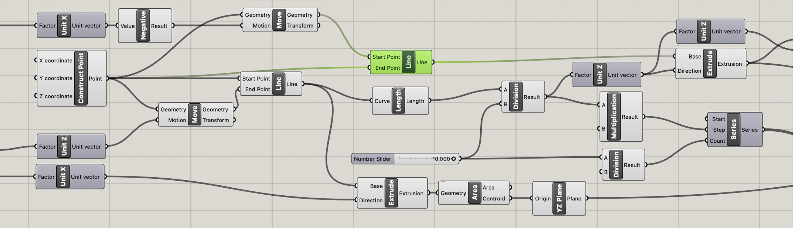
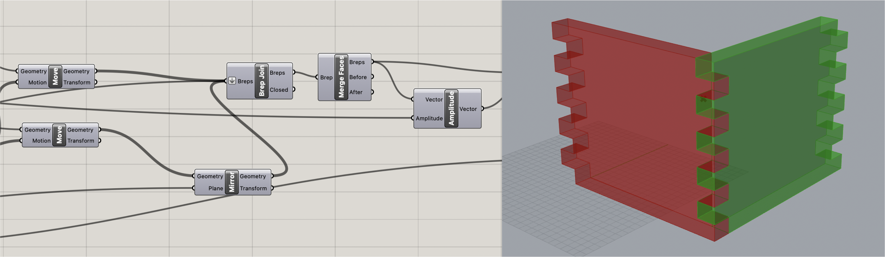
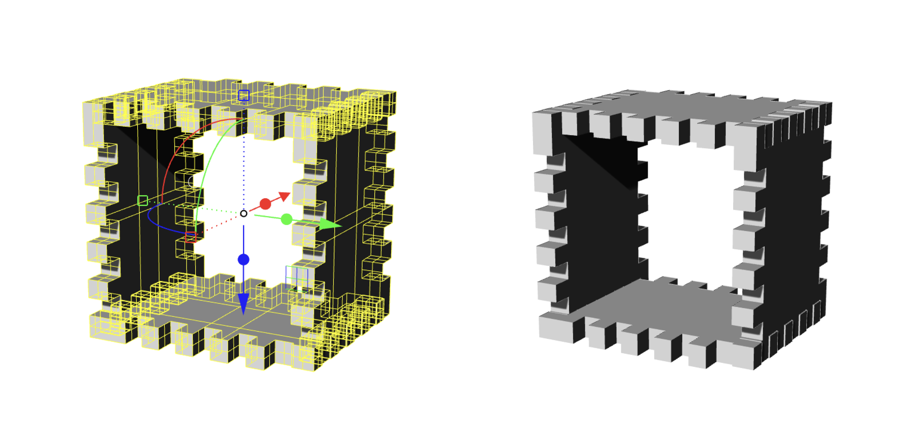
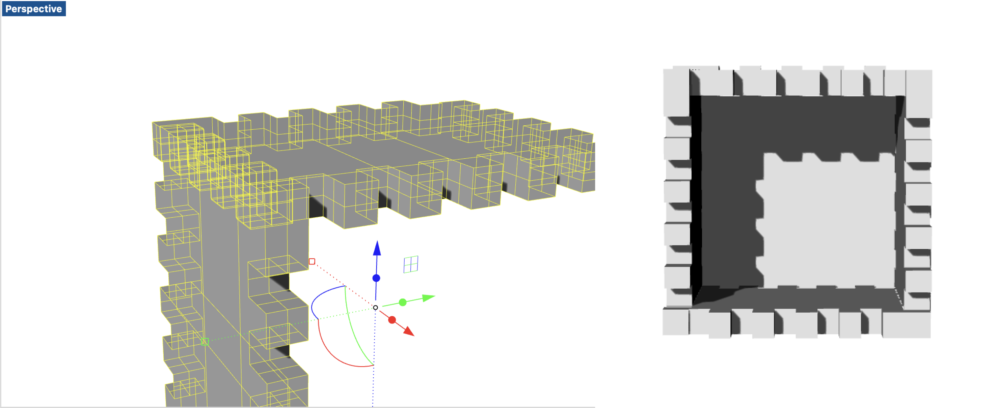

Subtractive Manufacturing! - 3D printing a box
Assignment 4

Modeling

I used the grasshopper modeling that I made for assignment 2, and modify it to have the top and bottom part joints. For the modeing part, For the base rectangle and each tooth of the pieces, I used number slider and unit X,Y,Z to set the size. With the unit Z I divded them and use the number slider to set each joint's number. It is divided by the vertical of the rectangle, so that it can fit into it.

Above image explains the grasshoper definition of the extrusion. Use "extrusion" and connect them into each unit vector, so that it can extrude every curbs together.To make every joints and curve connected, I used "Brep Join" and them merge them into one pieces to be a box shape connected each other.


I modified the above model that I made for assignment 2 to have the bottom and top joints. This is the final rendered preview of the box model that I made on Rhino with grasshopper.
3D Printing

For the 3D printing, I used the 3D printer in the mill, which is Dremel ECO ABS. For the priniter setting, I used Cura, and set the quality as "High Speed", 10% Infill. For Each joints, I made 1~2mm aperture to some joints so it can joints smoothly. The size of the piece that I set was 110*87, so it took 1 hour and 26 min for printing each pieces.
Final Deliverable
For the final deliverable, I assembled the walls of the box in different colors, so the assembled joints looks more apparent.
As you can see here, each joints stick strictly, so when I assembly the bottom part, I need to sand the surface little bit to assembly them easier.

Appendix
Link to the Grasshopper File (ghx) by. Soo Hwang
Link to the Grasshopper File (gh) by. Soo Hwang